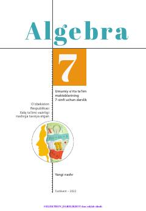

7A7-sinf o'quvchilari uchun mo'ljallangan rasmiy algebra darsligi.
Ushbu darslik umumiy o‘rta ta’lim maktablarining 7-sinf o‘quvchilari uchun mo‘ljallangan bo‘lib, algebraik ifodalar, qisqa ko‘paytirish formulalari, chiziqli tenglamalar va funksiyalar kabi mavzularni o‘z ichiga oladi. Kitobda nazariy tushuntirishlar bilan birga amaliy mashqlar, mantiqiy topshiriqlar va xalqaro baholash dasturlariga oid misollar keltirilgan.